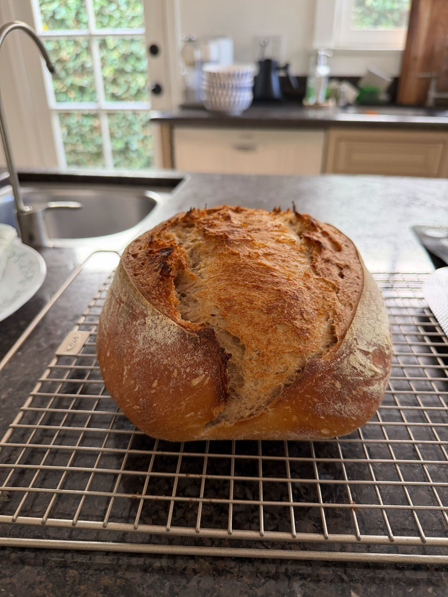

Twenty-five Rye Sourdough Bread

This bread has a deeply complex flavor profile with assertive fermantation flavors and an earthly backdrop.
31gwhole rye flour34gwater16gripe sourdough starter, 100% hydration
Mix the levain, cover, and leave for about 5 hours at warm room temperature.
406gwhite flour (~11.5% protein)104gwhole rye flour345gwater
Create the autolyse 1 hour before the levain is done, by mixing the flour with the water until no dry bits remain. Cover and rest at warm room temperature for 1 hour.
54gwater10gfine sea salt81glevain
Mix the dough by adding the salt, about a third of the water and the ripe levain to the autolyse. Mix and add more water as needed. It should feel firm, but sticky. Then strengthen the dough for 5-6 minutes.
Cover and set aside, do 5 sets of stretch and folds at 30-minutes intervals. Leave for bulk fermentation for about 2 hours after the last stretch and fold.
At the end of bulk fermentation, check to make sure the dough is airy, strong and alive. Wet your hands and using a bowl scraper gently transfer the dough to a clean work surface.
Preshape the dough and leave uncovered for 35 minutes.
Lightly flour your hands and work surface, and shape into a boule or bâtard, transfer to a proofing basket (that’s lightly floured), cover and keep in fridge overnight.
Preheat the oven to 450°F with the dutch oven and lid inside for at least 30 minutes.
Remove the dough from fridge, score using baker’s lame or knife, transfer to dutch oven and cover, place in oven and bake for 20 minutes. Remove lid and bake for another 15-20 minutes.
When done the loaf should have an internal temperature of 206°F-210°F. Place the loaf on a cooling rack and let it cool for 2 hours before slicing.